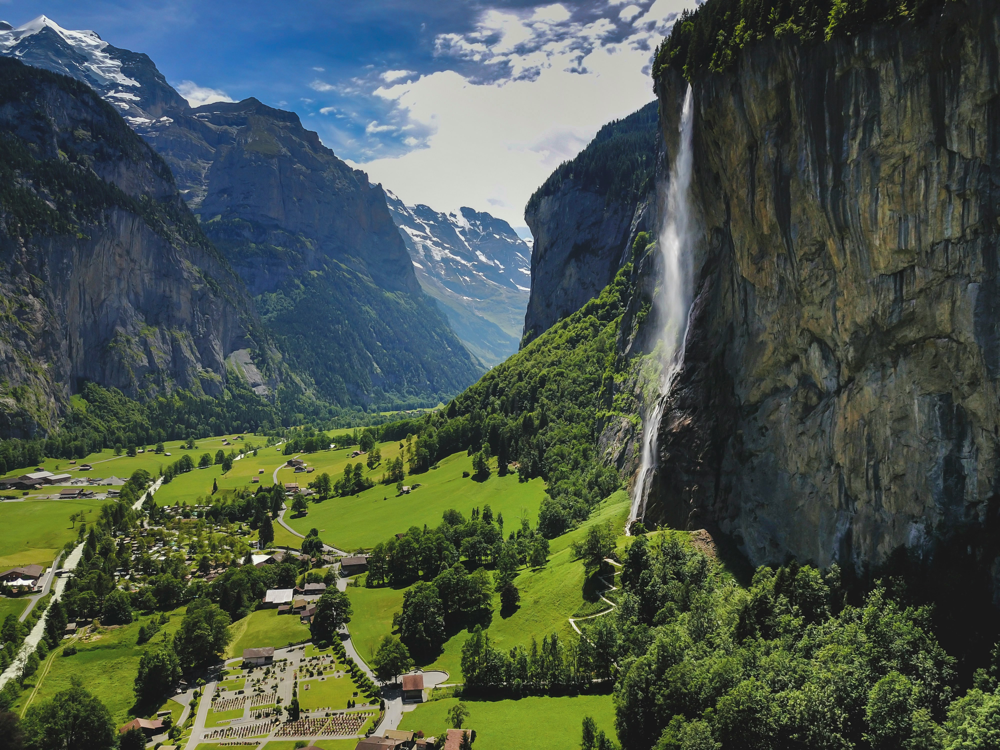
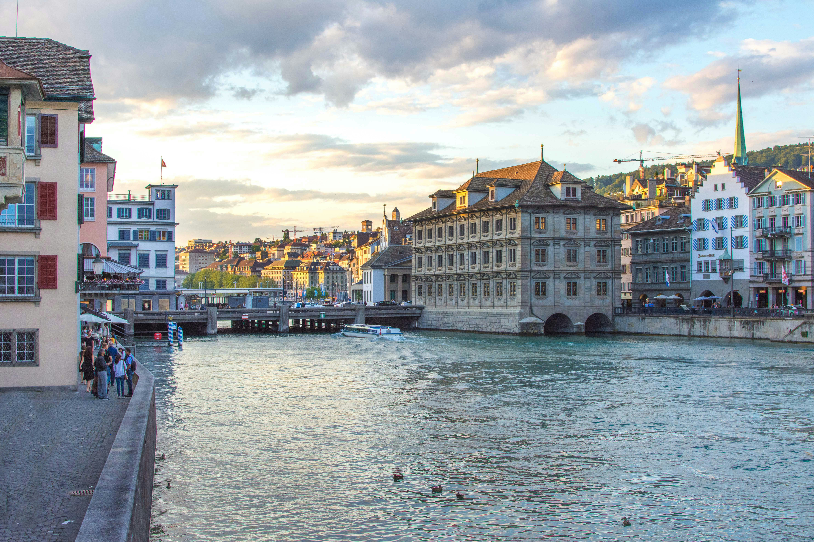
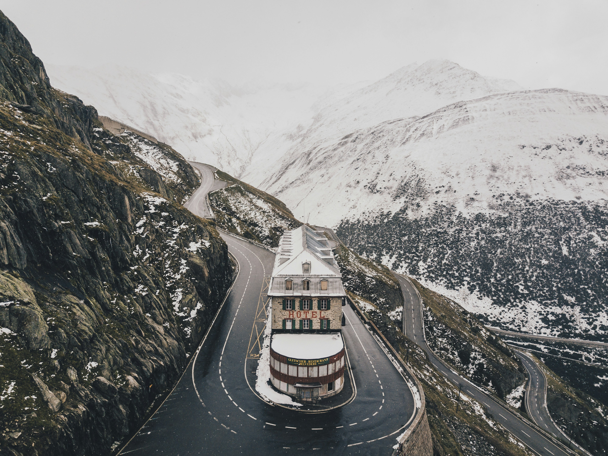
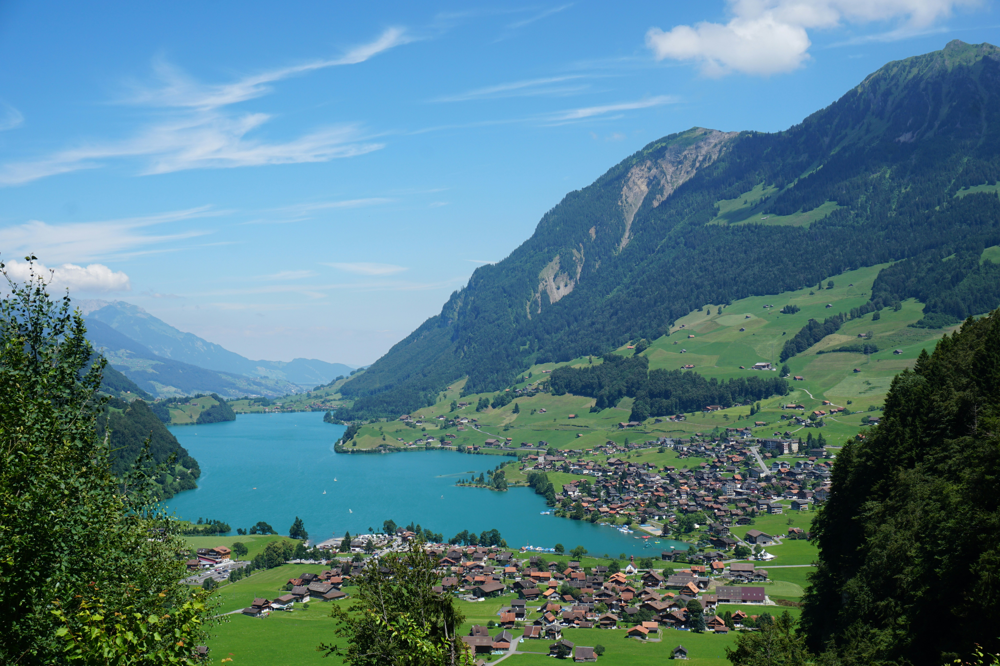

Switzerland is the world's masterclass in precision and purity. Nestled in the
very heart of Europe, it is a land defined by the overwhelming majesty of the High Alps, shimmering glacial
lakes, and cities that function with the clockwork accuracy of its famous timepieces. Whether you are navigating
the high-altitude peaks of Zermatt or savoring the cosmopolitan elegance of Geneva, Switzerland offers a
standard of luxury and natural wonder that remains unrivaled on the global stage.
1. The Matterhorn: The Alpinist's Icon

Rising like a jagged granite claw above the car-free village of Zermatt, the Matterhorn is
perhaps the most photographed and recognizable mountain peak in the world. Its symmetrical, pyramidal shape
is the ultimate symbol of the Swiss Alps, serving as a silent guardian over a landscape of pristine
glaciers, high-altitude meadows, and traditional wooden chalets. For centuries, this four-sided peak has
challenged the world's most daring adventurers and inspired countless poets and artists, representing the
wild, untamed beauty of the 'roof of Europe'. Whether viewed from the Gornergrat railway or seen reflected
in the still waters of Stellisee at dawn, the Matterhorn's presence is both humbled and transcendent. It is
not just a geological formation; it is a profound monument to the raw power of nature and the enduring
spirit of alpine exploration.
2. Lake Geneva: A Shoreside Symphony of Luxury

Lake Geneva, or Lac Léman, is a sprawling crescent of sapphire water that serves as the
heart of Francophone Switzerland, surrounded by snow-capped peaks and the lush, terraced vineyards of
Lavaux. The cities along its banks, from the international hive of Geneva—home to global diplomacy and fine
watchmaking—to the jazz-fueled charm of Montreux, exude a sophisticated elegance that is uniquely Swiss. The
famous Jet d'Eau, shooting 140 meters of water into the air, serves as a high-powered symbol of the region's
energy and cosmopolitan ambition. Exploring the lake by historic belle-époque steamer reveals a landscape of
fairy-tale castles like Chillon and opulent grand hotels that have hosted legends of art and literature for
over a century. It is a place where the tranquility of the water meets the intellectual vibrancy of a global
crossroads.
3. Zurich: Where Medieval Tradition Meets Financial Innovation

Zurich is the primary heartbeat of Swiss innovation, finance, and contemporary art, yet it
remains deeply and proudly connected to its medieval roots. Its historic Altstadt (Old Town) is a charming
labyrinth of narrow lanes, ancient guild houses, and the iconic twin towers of the Grossmünster cathedral,
all reflected in the clear waters of the Limmat River. Just a few steps away lies the Bahnhofstrasse, one of
the world's most exclusive shopping avenues, where ultra-modern luxury boutiques and prestigious private
banks embody the city's global influence. Zurich offers a rare balance of urban sophistication and natural
proximity; within minutes, one can transition from a high-stakes boardroom to the tranquil shores of Lake
Zurich or the forested trails of Uetliberg mountain. It is a city that functions with the clockwork accuracy
of a fine Patek Philippe, yet retains a soulful, creative energy that manifests in its vibrant West Zurich
district and numerous world-class museums.
4. Interlaken: The Gateway to the Bernese Oberland

Interlaken is the ultimate adventure capital of the Swiss Alps, uniquely positioned on a
narrow strip of land between the brilliant turquoise waters of Lake Thun and Lake Brienz. As the gateway to
the Bernese Oberland, it serves as the perfect base for exploring the legendary triple peaks of the Eiger,
Mönch, and Jungfrau. The town itself is a bustling hub of Victorian-era hotels and emerald parks, where
paragliders often descend from the sky like colorful birds. Beyond its role as a transport hub, Interlaken
offers access to some of Switzerland's most dramatic landscapes, from the thundering subterranean waterfalls
of Trümmelbach to the high-altitude thrills of First and Schynige Platte. Whether you are seeking the
adrenaline of canyoning and skydiving or the quiet contemplation of a mountain lake, Interlaken provides a
sense of boundless possibility in the shadow of the world's most formidable giants.
5. Lucerne: The Chapel Bridge & The Heart of Switzerland

Lucerne is often described as the most beautiful city in Switzerland, a place where
history and nature are inextricably linked in a picturesque lakeside setting. The city's crown jewel is the
Kapellbrücke (Chapel Bridge), a 14th-century wooden covered bridge that snakes across the Reuss River, its
interior gables still adorned with original paintings depicting the city's history. Surrounded by the
formidable peaks of Mount Pilatus and Mount Rigi, Lucerne serves as the spiritual heart of the Swiss
Confederation. Its Old Town is a pedestrian-only treasure of frescoed buildings and sun-drenched squares,
while the nearby Lion Monument offers a poignant tribute to Swiss history. A cruise across Lake Lucerne,
with its fjords-like scenery and steep mountain walls, is a journey into the soul of the country, where
every turn of the water reveals a new landscape of profound purity and quiet grandeur.
6. St. Moritz: The Birthplace of Alpine Glamour

St. Moritz is more than just a winter resort; it is the birthplace of Alpine winter
tourism and the world's most glamorous destination for high-altitude luxury. Located in the Engadin Valley,
this vibrant town enjoys 322 days of sunshine a year and a 'champagne climate' that invigorates the soul.
St. Moritz has hosted the Winter Olympics twice, but its appeal goes far beyond sports; it is a hub of
world-class gastronomy, high-end art galleries, and the prestigious Cresta Run. The town borders a stunning
lake that freezes in winter, becoming a stage for polo matches, horse racing, and cricket—all played on ice.
Surrounded by the jagged, snow-covered Engadin mountains, the luxury hotels of St. Moritz, such as the
Badrutt's Palace, offer a standard of service and opulence that has attracted royalty and icons of cinema
for over 150 years. It is a place where the air is as crisp as a diamond and the lifestyle is as sparkling
as the snow itself.
7. Jungfraujoch: Journey to the Top of Europe

At 3,454 meters above sea level, Jungfraujoch is the highest railway station in Europe and
a marvel of early 20th-century engineering. The journey to the 'Top of Europe' involves a cogwheel train
that tunnels through the literal heart of the Eiger and Mönch mountains, emerging into a breathtaking world
of eternal snow and ice. From the Sphinx Observatory, visitors are treated to a panoramic vista that
includes the Aletsch Glacier—the longest glacier in the Alps and a UNESCO World Heritage site—and views that
stretch across the border into France and Germany on a clear day. Walking through the Ice Palace, carved
directly into the glacier, is a surreal experience that highlights the fleeting and fragile beauty of the
high mountains. Jungfraujoch is a place where human ingenuity has bridged the gap between the habitable
world and the sublime, frozen wilderness of the high-altitude peaks.
8. Lugano: Mediterranean Flair in the Heart of the Alps

Lugano, located in the Italian-speaking canton of Ticino, offers an intoxicating blend of
Swiss efficiency and Mediterranean passion. Known as the 'Monte Carlo of Switzerland', the city is nestled
on the northern shores of the spectacular Lake Lugano, surrounded by the steep green slopes of Monte San
Salvatore and Monte Brè. Here, palm trees line the waterfront promenades, and Italian-style piazzas are
filled with open-air cafés and the scent of jasmine and risotto. Lugano is a city of high finance and high
culture, home to impressive art museums like the LAC (Lugano Arte e Cultura) and elegant historic villas.
Exploring the lake by boat reveals colorful fishing villages like Gandria and Morcote, where time seems to
have stood still for centuries. Lugano is a reminder that Switzerland is a multi-faceted country, capable of
offering both the rugged purity of the high Alps and the sun-lit joy of a Mediterranean garden.
The Sublime Purity of Switzerland: Switzerland is more
than a destination; it is an ideal of precision, beauty, and harmony. From the first breath of crisp,
high-altitude mountain air to the last glimpse of its shimmering glacial lakes at sunset, it is a country that
inspires profound awe and enduring respect for the natural world. Whether you are navigating the legendary peaks
of the Valais, exploring the historic heart of its global cities, or finding peace in the Italianate gardens of
Ticino, Switzerland offers a standard of excellence that remains unrivaled. We invite you to experience the
ultimate in Alpine luxury and Swiss precision for yourself. Discover the soul of the mountains. Grüezi!
The Signature of Excellence
Why Choose Luxe Voyages?
Curated Excellence
Every destination and accommodation is hand-selected to meet the
highest standards of luxury.
Direct Booking
Book directly with verified premium providers to ensure the best rates
and exclusive perks.
Global Legacy
Our worldwide presence ensures you have premium support wherever your
journey takes you.
Guest Experiences
From Our Global Travelers
"Luxe Voyages didn't just book a trip; they crafted an unforgettable experience. Every detail
was handled with unparalleled professionalism."
Julian Montgomery
Verified
Global
Traveler